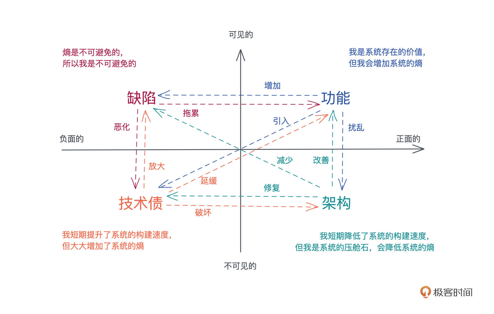
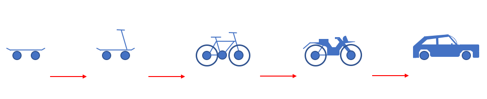
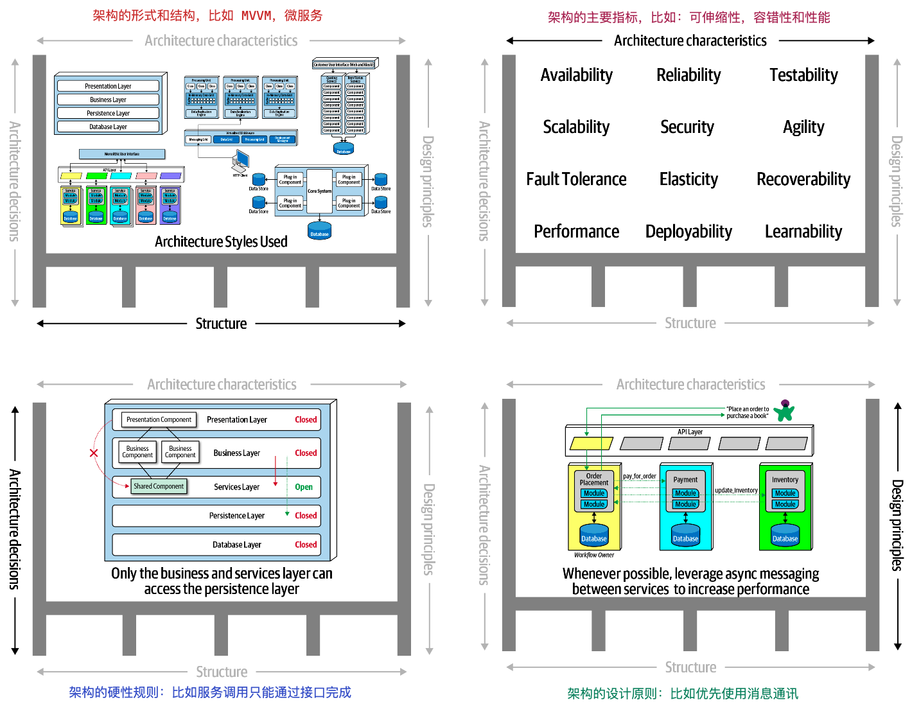
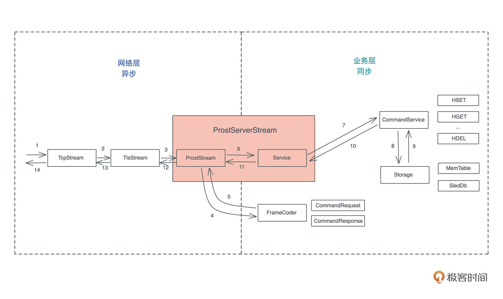
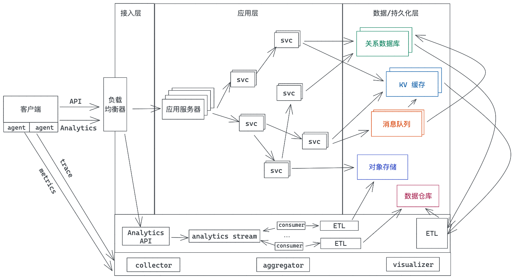
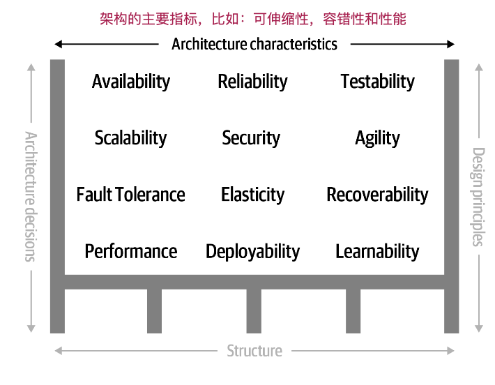
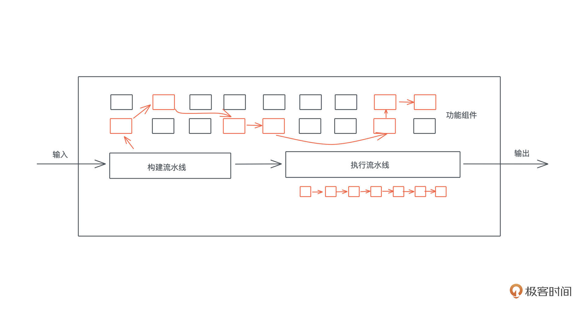
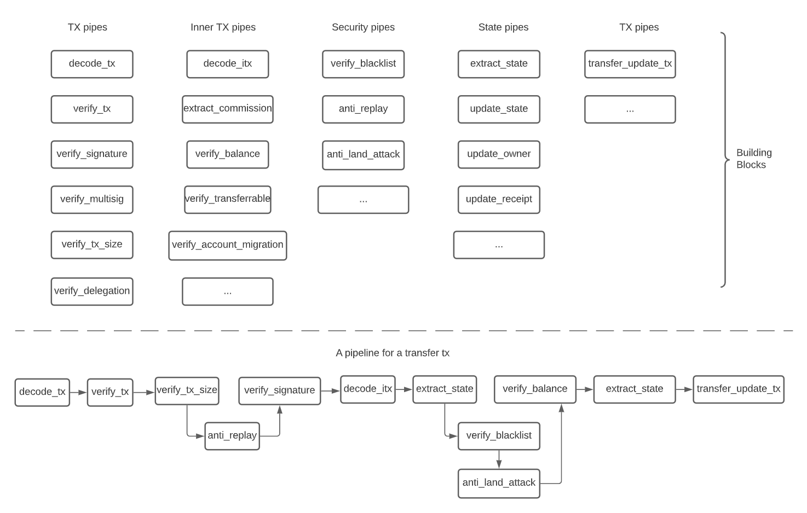
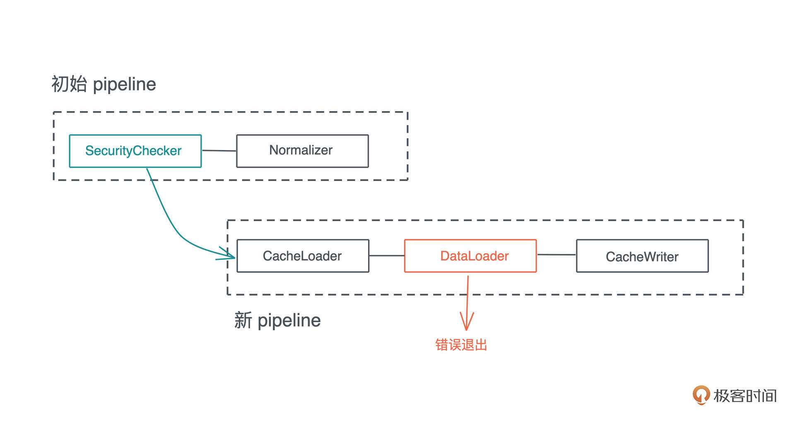
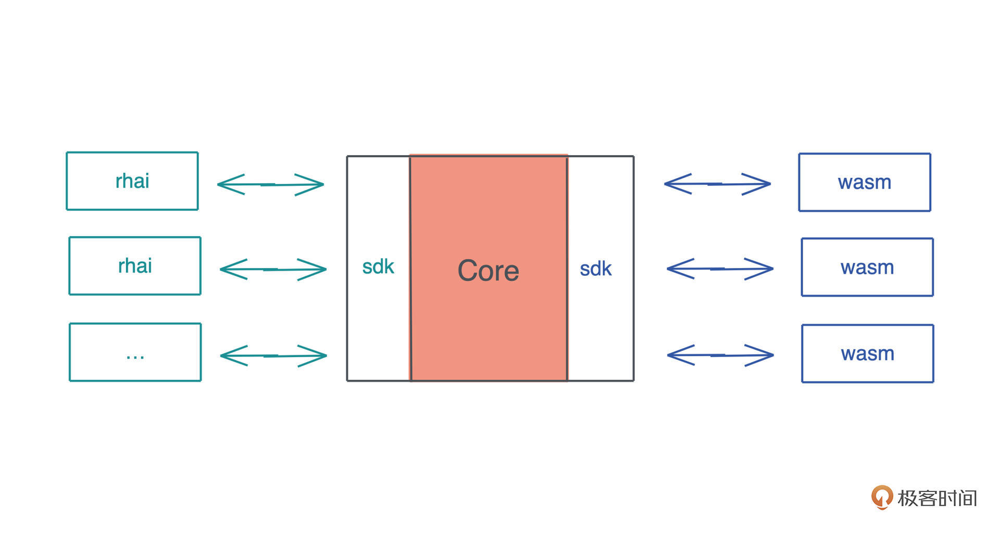

- 00 开篇词 让Rust成为你的下一门主力语言.md
- 01 内存：值放堆上还是放栈上，这是一个问题.md
- 02 串讲：编程开发中，那些你需要掌握的基本概念.md
- 03 初窥门径：从你的第一个Rust程序开始！.md
- 04 get hands dirty：来写个实用的CLI小工具.md
- 05 get hands dirty：做一个图片服务器有多难？.md
- 06 get hands dirty：SQL查询工具怎么一鱼多吃？.md
- 07 所有权：值的生杀大权到底在谁手上？.md
- 08 所有权：值的借用是如何工作的？.md
- 09 所有权：一个值可以有多个所有者么？.md
- 10 生命周期：你创建的值究竟能活多久？.md
- 11 内存管理：从创建到消亡，值都经历了什么？.md
- 12 类型系统：Rust的类型系统有什么特点？.md
- 13 类型系统：如何使用trait来定义接口？.md
- 14 类型系统：有哪些必须掌握的trait？.md
- 15 数据结构：这些浓眉大眼的结构竟然都是智能指针？.md
- 16 数据结构：Vec_T、&[T]、Box[T]_ ，你真的了解集合容器么？.md
- 17 数据结构：软件系统核心部件哈希表，内存如何布局？.md
- 18 错误处理：为什么Rust的错误处理与众不同？.md
- 19 闭包：FnOnce、FnMut和Fn，为什么有这么多类型？.md
- 20 4 Steps ：如何更好地阅读Rust源码？.md
- 21 阶段实操（1）：构建一个简单的KV server-基本流程.md
- 22 阶段实操（2）：构建一个简单的KV server-基本流程.md
- 23 类型系统：如何在实战中使用泛型编程？.md
- 24 类型系统：如何在实战中使用trait object？.md
- 25 类型系统：如何围绕trait来设计和架构系统？.md
- 26 阶段实操（3）：构建一个简单的KV server-高级trait技巧.md
- 27 生态系统：有哪些常有的Rust库可以为我所用？.md
- 28 网络开发（上）：如何使用Rust处理网络请求？.md
- 29 网络开发（下）：如何使用Rust处理网络请求？.md
- 30 Unsafe Rust：如何用C++的方式打开Rust？.md
- 31 FFI：Rust如何和你的语言架起沟通桥梁？.md
- 32 实操项目：使用PyO3开发Python3模块.md
- 33 并发处理（上）：从atomics到Channel，Rust都提供了什么工具？.md
- 34 并发处理（下）：从atomics到Channel，Rust都提供了什么工具？.md
- 35 实操项目：如何实现一个基本的MPSC channel？.md
- 36 阶段实操（4）：构建一个简单的KV server-网络处理.md
- 37 阶段实操（5）：构建一个简单的KV server-网络安全.md
- 38 异步处理：Future是什么？它和async_await是什么关系？.md
- 39 异步处理：async_await内部是怎么实现的？.md
- 40 异步处理：如何处理异步IO？.md
- 41 阶段实操（6）：构建一个简单的KV server-异步处理.md
- 42 阶段实操（7）：构建一个简单的KV server-如何做大的重构？.md
- 43 生产环境：真实世界下的一个Rust项目包含哪些要素？.md
- 44 数据处理：应用程序和数据如何打交道？.md
- 45 阶段实操（8）：构建一个简单的KV server-配置_测试_监控_CI_CD.md
- 46 软件架构：如何用Rust架构复杂系统？.md
- 加餐 Rust2021版次问世了！.md
- 加餐 代码即数据：为什么我们需要宏编程能力？.md
- 加餐 宏编程（上）：用最“笨”的方式撰写宏.md
- 加餐 宏编程（下）：用 syn_quote 优雅地构建宏.md
- 加餐 愚昧之巅：你的Rust学习常见问题汇总.md
- 加餐 期中测试：参考实现讲解.md
- 加餐 期中测试：来写一个简单的grep命令行.md
- 加餐 这个专栏你可以怎么学，以及Rust是否值得学？.md
- 大咖助场 开悟之坡（上）：Rust的现状、机遇与挑战.md
- 大咖助场 开悟之坡（下）：Rust的现状、机遇与挑战.md
- 特别策划 学习锦囊（一）：听听课代表们怎么说.md
- 特别策划 学习锦囊（三）：听听课代表们怎么说.md
- 特别策划 学习锦囊（二）：听听课代表们怎么说.md
- 用户故事 绝望之谷：改变从学习开始.md
- 用户故事 语言不仅是工具，还是思维方式.md
- 结束语 永续之原：Rust学习，如何持续精进？.md
46 软件架构：如何用Rust架构复杂系统？
你好，我是陈天。
对一个软件系统来说，不同部门关心的侧重点不同。产品、运营和销售部门关心产品的功能，测试部门关心产品的缺陷，工程部门除了开发功能、解决缺陷外，还要不断地维护和优化系统的架构，减少之前遗留的技术债。
从长远看，缺陷和技术债对软件系统是负面的作用，而功能和架构对软件系统是正面的作用。
从是否对用户可见来说，相比可见的功能和缺陷，架构和技术债是不可见的，它们往往会被公司的决策层以各种理由忽视，尤其，当他们的 KPI/OKR 上都布满了急功近利的数字，每个季度或者每半个财年都是生死战（win or go home）的时候，只要能实现功能性的中短期目标，他们什么都可以牺牲。不可见并且很难带来直接收益的架构设计，往往是最先被牺牲掉的。
但架构以及架构相关的工作会带来长期的回报。
因为平时我们往系统里添加新的功能，会不可避免地增加系统的缺陷，潜在引入新的技术债，以及扰乱原本稳定的架构。这是一个熵增的过程。缺陷会拖累功能的表现，进一步恶化系统中的技术债；而技术债会延缓新功能的引入，放大已有的和未来的缺陷，并破坏现有的架构。这样一直持续下去，整个系统会进入到一个下降通道，直到无以为继。
为了避免这样的事情发生，我们需要通过对架构进行维护性的工作，来减少缺陷，修复技术债，改善功能，最终将整个系统拉回到上升通道。

在我看来，软件系统是架构、功能、缺陷，以及技术债之间共同作用，互相拉扯的一个结果。
在一个项目的初期，为了快速达到产品和市场的契合（product market fit），引入技术债来最大程度提高构建的速度，是最佳选择。但这并不意味着我们可以放弃架构的设计，埋头码字。
过去二十年时间，敏捷宣言（Agile Manifesto）和精益创业（Lean startup）对软件社区最大的负面影响就是，一大堆外行或者并没有深刻理解软件工程的从业者，过分追求速度，过度曲解 MVP（Minimum Viable Product），而忽视了从起点出发前，必不可少的架构和设计功夫，导致大部分技术债实际上是架构和设计阶段的债务。
但产品初期，在方向并不明朗的情况下，我们如何架构系统呢？
类似瀑布模型那样的迭代方式，在产品的初期花费大量的精力做架构和设计，往往会导致过度设计，引入不必要的麻烦和可能永远用不上的“精妙”结构；但过分追求敏捷，干了再说，又会让技术债很快就积累到一个难以为继的地步。
所以，对于这样的场景，我们应该采用渐进式的架构设计，从 MVP 的需求中寻找架构的核心要素，构建一个原始但完整的结构（primitive whole），然后围绕着核心要素演进。比如（图片来源：维基百科）：

今天我们就来讲一讲怎么考虑架构设计，以及如何用Rust构建出一些典型的架构风格，希望你在学完这一讲最大的体会是：做任何开发之前，养成习惯，首先要做必要的架构和设计。
如何考虑架构设计？
架构设计是一个非常广泛的概念，很难一言以蔽之。在《Fundamentals of Software Architecture》一书中，作者从四个维度来探讨架构，分别是：
- Structure：架构的风格和结构，比如 MVVM、微服务
- Characteristics：架构的主要指标，比如可伸缩性、容错性和性能
- Decisions：架构的硬性规则，比如服务调用只能通过接口完成
- Design Principles：架构的设计原则，比如优先使用消息通讯
可以对照下面这张图理解，我们一个个说（来源：Fundamentals of Software Architecture）：

Structure架构的风格
首先是架构的风格。实战课中我们一直在迭代的 KV server，就采取了分层的结构，把网络层、业务层和存储层分隔开。

虽然最开始网络层长什么样子我们并不清楚，但这种分层使得后来不断迭代网络层的时候，不管是加入 TLS 的支持，还是使用 yamux 做多路复用，都不会影响到业务层。
一个复杂的大型系统往往可以使用分治的原则处理。之前展示过这样的图，一个互联网应用的最基本、最普遍的结构：

从业务的大方向上，我们可以进行分层处理，每层又可以选择不同的结构，比如微服务结构、事件驱动结构、管道结构等等，然后拆分出来的每个组件内部又可以用分层，比如把数据层、业务逻辑层和接口层分离，这样一层层延展下去，直到拆分出来的结果可以以“天”为单位执行。
在执行的过程中，我们可以选取跟 MVP 有关的路径进行开发，并在这个过程中不断审视架构的设计，做相应的修改。你如果回顾一下 KV server 的演进过程，从最初构造到目前这个几乎成型的版本，就可以感受到一开始有一个完整但原始的结构，然后围绕着核心演进的重要性。
Characteristics架构的主要指标
再来看架构的主要指标。就像图中展示的那样，一个系统有非常多的指标来衡量其成功，包括并不限于：高性能、可用性、可靠性、可测性、可伸缩性、安全性、灵活性、容错性、自我修复性、可读性等等。

不过，这些指标并不是平等的关系，不同的系统会有不同的优先级。
对于 KV server 来说，我们关心系统的性能/安全性/可测性，所以使用了最基本的 in-memory hashmap 来保证查询性能、使用 TCP + yamux 来保证网络性能、使用 channel 和 dashmap 来保证并发性能，以及使用 TLS 来保证安全性。同时，一直注重接口的清晰和可测试性。
可以看到，一旦我们做出了架构指标上的决定，那么进一步的设计会优先考虑这些指标的需求。
Decisions架构的硬性规则
在架构设计的过程中，引入硬性约束或者原则非常重要。它就像架构的“基本法”，不可触碰。很多时候，当你引入了某个结构，你也就引入了这个结构所带来的的约束，比如微服务结构，它的约束就是：服务间的一切访问只能通过公开的接口来完成，任何服务间不能有私下的约定。
这个现在看起来很容易理解的决定，在差不多二十年前，是振聋发聩的呐喊。2002 年，亚马逊还是一家小公司，贝佐斯还离首富差了几个比尔盖茨。作为一个不是特别懂技术的 MBA，他撰写了一个划时代的备忘录，并在亚马逊强制执行，这个备忘录很简单，看它的原文：
- All teams will henceforth expose their data and functionality through service interfaces.
- Teams must communicate with each other through these interfaces.
- There will be no other form of interprocess communication allowed: no direct linking, no direct reads of another team’s data store, no shared-memory model, no back-doors whatsoever. The only communication allowed is via service interface calls over the network.
- It doesn’t matter what technology they use. HTTP, Corba, Pubsub, custom protocols — doesn’t matter.
- All service interfaces, without exception, must be designed from the ground up to be externalizable. That is to say, the team must plan and design to be able to expose the interface to developers in the outside world. No exceptions.
- Anyone who doesn’t do this will be fired.
- Thank you; have a nice day!
这个备忘录促成了 AWS 这个庞大的云服务帝国的诞生。贝佐斯对架构的视野，至今还让我啧啧称奇。他精准地“看”到了云服务的未来，并以架构的硬性约束来促成三个要点：独立的服务、服务间只能通过接口调用、服务的接口要能够被外部开发者调用。
Design Principles架构的设计原则
最后，我们简单说说架构的设计原则。和架构的硬性约束不同的是，设计原则更多是推荐做法，而非不可触碰的雷区。我们在构建系统的时候，要留有余地，这样在开发和迭代的过程中，才能根据情况选择合适的设计。
比如对于 KV server 来说，推荐使用 TCP/yamux 来处理网络，但并不是说 gRPC 甚至 QUIC 就不能使用；推荐用二进制的 protobuf 来在客户端/服务器传输数据，但在某些场景下，如果基于文本的传输方式，或者非 protobuf 的二进制传输方式（比如 flatbuffer）更合适，那么未来完全可以替换这部分的设计。
如何用 Rust 构建典型的架构风格？
再复习一下刚才聊的架构设计的四个方面：
- Structure架构的风格和结构
- Characteristics架构的主要指标
- Decisions架构的硬性规则
- Design Principles架构的设计原则
其中后三点架构的指标、硬性规定以及设计原则，和具体项目的关联度很大，我们并没有模式化的工具来套用它。但架构风格是有很多固定的套路的。这些套路，往往是在日积月累的软件开发实践中，逐渐形成的。
目前比较普遍使用的架构风格有：分层结构、流水线结构、插件结构、微服务结构、事件驱动结构等。
微服务结构相信大家比较熟悉，这里就不赘述；事件驱动结构可以通过 channel 来实现，我们在KV server 中构建的 pub/sub 就有事件驱动的影子，但一个高性能的事件驱动结构需要第三方的消息队列来提供支持，比如 kafka、nats 等，你可以自己去看它们各自推荐的事件驱动模型。
不过不管你用何种分布式的架构，最终，每个服务内部的架构还是会使用分层结构、流水线结构和插件结构，我们这里就简单讲讲这三者。
分层结构
开头已经谈到了分层，这是最朴素，也是最实用的架构风格。软件行业的一句至理名言是：
All problems in computer science can be solved by another level of indirection.
这种使用分层来漂亮地解决问题的思路，贯穿整个软件行业。
操作系统是应用程序和硬件的中间层；虚拟内存是线性内存和物理内存的中间层；虚拟机是操作系统和裸机的中间层；容器是应用程序和操作系统的中间层；ISO 的 OSI 模型，把网络划分为 7 层，这让我们至今还受益于几十年前就设计出来的网络结构。
分层，意味着明确每一层的职责范围以及层与层之间接口。一旦我们有明晰的层级划分，以及硬性规定层与层之间只能通过公开接口调用，且不能跨层调用，那么，系统就具备了很强的灵活性，某层的内部实现可以完全被不同的实现来替换，而不必担心上下游受到影响。
在 Rust 下，我们可以用 trait 来进行接口的定义，通过接口来分层。就像 KV server 展现的那样，把网络层和业务层分开，网络层或者业务层各自的迭代不会影响对方的行为。
流水线结构
大部分系统的处理流程都可以用流水线结构来表述。我们可以把处理流程中的要素构建成一个个接口一致、功能单一的组件，然后根据不同的输入，来选择合适的组件，将它们组织为一个完整的流水线，然后再依次执行。
这样做的好处是，在执行过程中，我们不需要对输入进行判断来决定执行什么代码，要执行的代码已经包含在流水线之中。而流水线的构建，在编译期、加载期就可以预处理好最常见的流程（fast path），只有不那么常见的输入，才需要在运行时构建合适的流水线（slow path）。一旦一个新的流水线被构建出来，还可以缓存它，下一次就可以直接执行（fast path）。
我们看一个流水线处理的典型结构：

这种结构在实战中非常有用，比如 Elixir 下处理网络流程的 Plug。下图是我之前在处理区块链的 TX 时设计的流水线结构：

流水线可以是架构级的宏观流水线，也可以是函数级的微观流水线。它最大的好处是通过组合不同的基本功能，完成各种各样复杂多变的需求。就像乐高积木，最基本的积木组件是有限的，但我们可以创建出无穷多的组合。
使用 Rust 创建流水线结构并不复杂，你可以利用 enum/trait 构造。比如下面的实例（代码）：
use std::fmt;
pub use async_trait::async_trait;
pub type BoxedError = Box<dyn std::error::Error>;
/// rerun 超过 5 次，就视为失败
const MAX_RERUN: usize = 5;
/// plug 执行的结果
#[must_use]
pub enum PlugResult<Ctx> {
Continue,
Rerun,
Terminate,
NewPipe(Vec<Box<dyn Plug<Ctx>>>),
Err(BoxedError),
}
/// plug trait，任何 pipeline 中的组件需要实现这个 trait
#[async_trait]
pub trait Plug<Ctx>: fmt::Display {
async fn call(&self, ctx: &mut Ctx) -> PlugResult<Ctx>;
}
/// pipeline 结构
#[derive(Default)]
pub struct Pipeline<Ctx> {
plugs: Vec<Box<dyn Plug<Ctx>>>,
pos: usize,
rerun: usize,
executed: Vec<String>,
}
impl<Ctx> Pipeline<Ctx> {
/// 创建一个新的 pipeline
pub fn new(plugs: Vec<Box<dyn Plug<Ctx>>>) -> Self {
Self {
plugs,
pos: 0,
rerun: 0,
executed: Vec::with_capacity(16),
}
}
/// 执行整个 pipeline，要么执行完毕，要么出错
pub async fn execute(&mut self, ctx: &mut Ctx) -> Result<(), BoxedError> {
while self.pos < self.plugs.len() {
self.add_execution_log();
let plug = &self.plugs[self.pos];
match plug.call(ctx).await {
PlugResult::Continue => {
self.pos += 1;
self.rerun = 0;
}
PlugResult::Rerun => {
// pos 不往前走，重新执行现有组件，rerun 开始累加
self.rerun += 1;
}
PlugResult::Terminate => {
break;
}
PlugResult::NewPipe(v) => {
self.pos = 0;
self.rerun = 0;
self.plugs = v;
}
PlugResult::Err(e) => return Err(e),
}
// 如果 rerun 5 次，返回错误
if self.rerun >= MAX_RERUN {
return Err(anyhow::anyhow!("max rerun").into());
}
}
Ok(())
}
pub fn get_execution_log(&self) -> &[String] {
&self.executed
}
fn add_execution_log(&mut self) {
self.executed.push(self.plugs[self.pos].to_string());
}
}
你可以在 playground 里运行包括完整示例代码的例子。
开始的时候，初始化一个包含 [SecurityChecker, Normalizer] 两个组件的流水线。在执行 SecurityChecker 过程中，流水线被更新为 [CacheLoader, DataLoader, CacheWriter] 的结构，然后在执行到 DataLoader 时，出错退出。所以整个执行流程如下图所示：-

插件（微内核）结构
插件结构（Plugin Architecture）也被称为微内核结构（Microkernel Architecture），它可以让你的系统拥有一个足够小的核心，然后围绕着这个核心以插件的方式注入新的功能。
我们平时使用的 VS Code 就是典型的插件结构。它的核心功能就是文本的编辑，但通过各种插件，它可以支持代码的语法高亮、错误检查、格式化等等功能。
在构建插件结构时，我们需要设计一套足够稳定的接口，保证插件和核心之间的交互；还需要设计一套注册机制，让插件可以被注册进系统，或者从系统中删除。
在 Rust 下，除了正常使用 trait 和 trait object 来构建插件机制，在系统内部使用插件结构外，还可以通过 WebAssembly（通过 wasmer 或 wasmtime） 或者 rhai 这样的嵌入式脚本来允许第三方通过插件来扩展系统的能力：

小结
架构是一个复杂的东西，它充满了权衡（trade-off）。我非常推崇 Clojure 创造者 Rich Hickey 的一句话，大意是说“你只有有了足够的替代方案，才谈得上权衡”。
我们在做软件开发时，不要着急上来就甩开膀子写代码，要先让需求在大脑中沉淀，思考这个需求和已有的哪些需求相关、和我见过的哪些系统类似，然后再去思考都有什么样的方案、它们的利弊是什么。
好的架构师了解足够多的架构风格，所以不拘泥于某一种，也不会手里拿着锤子，看什么都是钉子。好的架构师平时还有足够多的阅读、足够多的积累，这样在遇到架构问题时，可以迅速和曾经遇见的系统联系和类比。这也是为什么我非常建议你们多阅读市面上优秀的代码，因为广泛且有深度的阅读才能拓宽你的眼界，才能帮你累积足够多的素材。
当然，阅读仅仅是第一步。有了阅读的基础，你可以多进行“纸上谈兵”的脑力训练，看到一个系统，就尝试分析它的架构，看看自己能不能自圆其说，架构出类似的产品。这样的脑力训练除了可以更好地帮助你提升架构分析能力外，还可以帮你学到“你不知道你不知道的事情”。
比如我曾经花了些功夫去研究 Notion，顺着这条线更深入地探索 OT 和 CRDT 算法，在深入探索中，我遇见了 yjs、automerge、diamond-types 等优秀的工具，这些都是我之前从未使用过的东西。
最后，你还需要去真正把自己设计的架构落地，应用在某些项目中。一个人一生中可以主导某些大项目架构的机会并不多，所以，在机会来临时，抓住它，把你平生所学应用上去，此时你会渐渐感受到头脑中的架构和真正落地的架构之间的差异。
有同学可能会问，如果机会没有来临怎么办？那么就在业余时间去写各种你感兴趣的东西，以此来磨练自己的能力，默默等待属于自己的机会。当年明月写《明朝那些事儿》，刘慈欣写《三体》，也并不是他们在工作中得到的机会。兴趣最好的老师，热爱是前进的动力。
思考题
请花些时间阅读《Fundamentals of Software Architecture》这本书。
欢迎在留言区分享你今天的学习收获或感悟。如果你觉得有收获，也欢迎分享给身边的朋友，邀他一起讨论。我们下节课见。
© 2019 - 2023 Liangliang Lee. Powered by gin and hexo-theme-book.